Who Is A Tirthankar?
Jainism is about simple living and non-violence (Ahimsa). Jainism is a way of life based on the teachings of 24 Tirthankaras, of whom Lord Mahavira was the last and most prominent The word Tirthankara signifies the founder of a tirtha which means a fordable passage across the sea of interminable births and deaths (called saṃsāra). Tirthankaras are variously called "Teaching Gods", "Ford-Makers", "Crossing Makers" and "Makers of the River-Crossing.
| Serial No. | 24 Tirthankaras |
|---|---|
| 1 | Rishabhanatha (Adinatha) |
| 2 | Ajitanatha |
| 3 | Sambhavanatha |
| 4 | Abhinandananatha |
| 5 | Sumatinatha |
| 6 | Padmaprabha |
| 7 | Suparshvanatha |
| 8 | Chandraprabha |
| 9 | Pushpadanta |
| 10 | Shitalanatha |
| 11 | Shreyanasanatha |
| 12 | Vasupujya |
| 13 | Vimalanatha |
| 14 | Anantanatha |
| 15 | Dharmanatha |
| 16 | Shantinatha |
| 17 | Kunthunatha |
| 18 | Aranatha |
| 19 | Māllīnātha |
| 20 | Munisuvrata |
| 21 | Naminatha |
| 22 | Neminatha |
| 23 | Parshvanatha |
| 24 | Mahavira |
Future 24 Tirthankaras Names Below are the names of the future 24 Tirthankaras who are going to apear in the next time cycle as per Jain Cosmology. 1) Padmanabha (King Shrenika) 2) Surdev (Mahavira's uncle Suparshva) 3) Suparshva (King Kaunik's son king Udayin) 4) Svamprabh (The ascetic Pottil) 5) Sarvanubhuti (Śrāvaka Dridhayadha) 6) Devshruti (Kartik's Shreshti) 7) (Shravak Shamkha) 8) Pedhalputra (Shravak Ananda) 9) Pottil (Shravak Sunand) 10) (Sharavak Shatak) 11) Munivrat (Krishna's mother Devaki) 12) Amam (Krishna) 13) Shrinishkashay (Satyaki Rudhra also Satyaki of Mahabharata) 14) Nishpulak (Krishna's brother Balbhadra also known as Balrama) 15) Nirmam (Shravika Sulsa) 16) Chitragupta (Krishna's brother's mother Rohini Devi) 17) Samadhinath (Revati Gathapatni) 18) Samvarnath (Sharavak Shattilak) 19) Yashodhar (Rishi Dwipayan) 20) Vijay (Karna of Mahabharata) 21) Malyadev (Nirgranthaputra or Mallanarada) 22) Devachandra (Shravak Ambadh) 23) Anantvirya (Shravak Amar) 24) Shribhadrakar (Shanak)


-
Rishabhanatha (Adinatha)
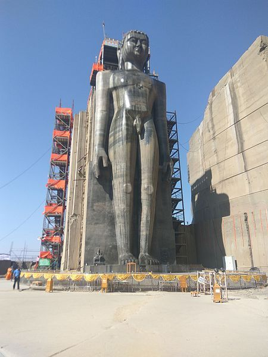 Rishabhanatha (also Ṛṣabhadeva, Rishabhadeva, or Ṛṣabha) is the first Tīrthaṅkara (lit. 'ford-maker') of Jainism.[5][6] He was the first of twenty-four teachers in the present half-cycle of time in Jain cosmology, and called a "ford maker" because his teachings helped one across the sea of interminable rebirths and deaths. Jain legends depict him as having lived millions of years ago.[7][4] He is also known as Ādinātha which translates into "First (Adi) Lord (nātha)",Rishabha (Hinduism)[7] as well as Adishvara (first ishvara), Yugadideva (deva of yuga), Prathamaraja (first king), and Nabheya (son of Nabhi).[8][9] Along with Mahavira, Parshvanatha and Neminatha, Rishabhanatha is one of the four Tirthankaras that attract the most devotional worship among the Jains.[10] According to Jain traditional accounts, he was born to king Nabhi and queen Marudevi in the north Indian city of Ayodhya, also called Vinita.[4] He had two wives, Sunanda and Sumangala. Sumangala is described as the mother of his ninety-nine sons (including Bharata) and one daughter, Brahmi. Sunanda is depicted as the mother of Bahubali and Sundari. The sudden death of Nilanjana, one of the dancers of Indra, reminded him of the world's transitory nature, and he developed a desire for renunciation. After his renunciation, the Jain legends state Rishabhanatha wandered without food for an entire year. The day on which he got his first ahara (food) is celebrated by Jains as Akshaya Tritiya. He attained Moksha on Mount Asthapada (Kailash). The text Adi Purana by Jinasena is an account of the events of his life. His iconography includes colossal statues such as Statue of Ahimsa, Bawangaja and those erected in Gopachal hill. His icons include the eponymous bull as his emblem, the Nyagrodha tree, Gomukha (bull-faced) Yaksha, and Chakreshvari Yakshi.
-
Ajitnath
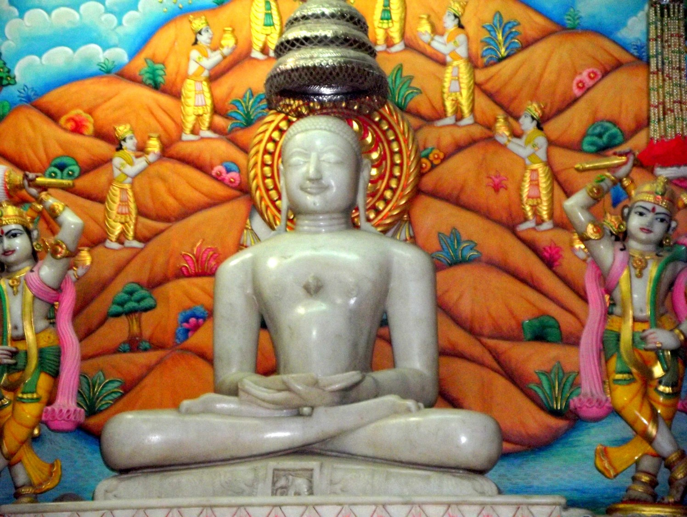 Ajitnath (lit. invincible) was the second tirthankara of the present age, avasarpini (half time cycle) according to Jainism. He was born to King Jitashatru and Queen Vijaya at Ayodhya in the Ikshvaku dynasty. According to Jain Legends, he became a Teerthankar and a Chakravarthi King. He was a liberated soul which has destroyed all of its karma. Ajitnatha (lit. invincible)[1] was the second tirthankara of the present age, avasarpini (half time cycle) according to Jainism.[2] Ajitnatha was born in the town of Saketa to King Jitashatru and Queen Vijaya at Ayodhya in the Ikshvaku dynasty on magha-shukla-dashmi (the tenth day of the bright half of the month of Magha).[2] His height was 450 dhanusha (1350 meters). He was born 508.032 x 1018 years ago and lived for a span of 72 lakh purva.[1] He attained kevala jnana under the sal tree and Moksha on chaitra-shukla-panchmi (fifth day of the bright half of the month of Chaitra) from Shikharji.[3][1] Simhasena was his chief Ganadhara.[1]
-
Sambhavanatha
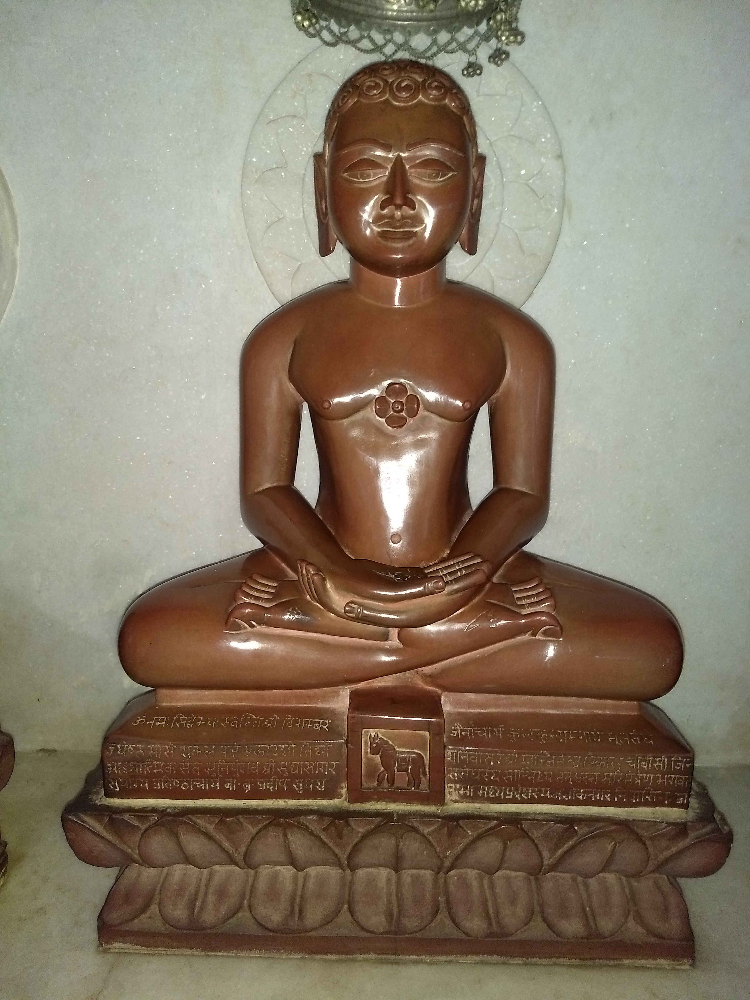 Sambhavanatha was the third Jain tirthankara (omniscient teaching god) of the present age (Avasarpini). Sambhavanatha was born to King Jitārī and Queen Susena at Sravasti. His birth date was the fourteenth day of the Margshrsha shukla month of the Indian calendar. Like all arihant (omniscient beings), Sambhavanatha at the end of his life destroyed all associated karmas and attained moksha (liberation). Sambhavanatha was the third tirthankara (omniscient Jain teacher) of the present age (Avasarpini).[1] He was born to King Jitārī and Queen Susena at Sravasti.[2][3] in the Ikshvaku dynasty.[1] His height was 400 dhanusa (1,200 meters).[2] Sambavanatha is associated with Horse emblem, Sala tree,[4] Trimukha (three-faced) Yaksha and Prajnapthi & Duritari Yakshi.[5] According to Jain text Uttarapurāṇa, Sambhavanatha possessed three types of knowledge from birth.[6]
-
Abhinandananatha

Abhinandananatha or Abhinandana Swami was the fourth Tirthankara of the present age (Avasarpini). He is said to have lived for 50 lakh purva. He was born to King Sanvara and Queen Siddhartha at Ayodhya in the Ikshvaku clan. His birth date was the second day of the Magh shukla month of the Indian calendar. According to Jain beliefs, he became a siddha, a liberated soul which has destroyed all of its Karma. Abhinandananatha or Abhinandana Swami was the fourth Tirthankara of the present age (Avasarpini).[1] He is said to have lived for 50 lakh purva.[2] He was born to King Sanvara and Queen Siddhartha at Ayodhya in the Ikshvaku clan.[3] His birth date was the second day of the Magh shukla month of the Indian calendar.[1] He attained Kevala Jnana under priyangu tree.[4] According to Jain beliefs, he became a siddha, a liberated soul which has destroyed all of its Karma.[citation needed] According to Jain tradition, his height was 350 dhanusha (1,050 meters).[5]
-
Sumatinatha

Sumatinatha was the fifth Jain Tirthankara of the present age (Avasarpini). Sumatinatha was born to Kshatriya King Megha (Meghaprabha) and Queen Mangala (Sumangala) at Ayodhya in the Ikshvaku dynasty. His Janma Kalyanak (birthday) was the eighth day of the Vaisakha Sudi month of the Jain calendar. Sumatinatha was the fifth Jain Tirthankara of the present age (Avasarpini).[1] Sumatinatha was born to Kshatriya King Megha (Meghaprabha) and Queen Mangala (Sumangala) at Ayodhya in the Ikshvaku dynasty. His birth date was the eighth day of the Vaisakha Sudi month of the Jain calendar.[1] He attained Kevala Jnana under sala or priyangu tree.[2] According to Jain beliefs, he became a siddha, a liberated soul which has destroyed all of its karma. Lord Sumithanatha is associated with Heron (Krauncha) emblem, Priyangu tree, Tumburu (Purushadatta) Yaksha and Mahakala Yakshi.[3] In his previous incarnation, Lord Sumatinatha was an Indra in the Jayanta Vimana.[4]
-
Padmaprabha
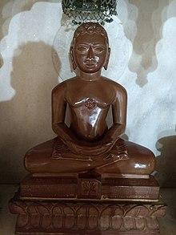 Padmaprabha, also known as Padmaprabhu, was the sixth Jain Tirthankara of the present age (Avsarpini).[1] According to Jain beliefs, he became a siddha - a liberated soul which has destroyed all of its karma. In the Jain tradition, it is believed that Padmaprabha was born to King Shridhar and Queen Susimadevi in the Ikshvaku dynasty at Kausambi[1] which is in today's Uttar Pradesh, India. Padmaprabha means ‘bright as a red lotus’ in Sanskrit.It is said in Śvetāmbara sources that his mother had a fancy for a couch of red lotuses – padma – while he was in her womb.[2] His birth date was the twelfth day of the Kartik krishna month of the Indian calendar.[citation needed] On the eleventh day of the dark half of the month of Margashirsh, Bhagwan Padmaprabha, along with other 308 saints was liberated and attained moksha on Sammet
-
Suparshvanatha
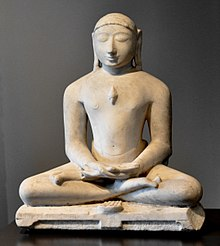 Suparśvanātha (Sanskrit: सुपार्श्वनाथ Suparśvanātha), also known as Suparśva, was the seventh Jain Tīrthankara of the present age (avasarpini). He was born to King Pratistha and Queen Prithvi at Varanasi on 12 Jestha Shukla in the Ikshvaku clan. He is said to have attained moksha at Śikharji on the sixth day of the dark half of the month of Phālguna. Suparśvanātha was the seventh Jain Tīrthankara of the present age (avasarpini).[1] He was born to King Pratistha and Queen Prithvi at Varanasi on 12 Jestha Shukla in the Ikshvaku clan.[2] There is temple dedicated to Suparshvanatha built in Bhadaini, Varanasi to commemorate the birth of Suparshvanatha.[3][4] Nine months before the birth of Suparśvanātha, Queen Prithivī dreamt the sixteen most auspicious dreams.[5] Suparśvanātha spent 5 lakh pūrva as youth (kumāra kāla) and ruled His kingdom for 14 lakh pūrva and 20 pūrvāṇga (rājya kāla).[6] Suparśvanātha was married and ruled after his father King Pratistha. He conducted affairs in state and looked after well being of individual.[7]
-
Chandraprabha

In Jainism, Chandraprabha was the eighth Tirthankara of Avasarpini (present half cycle of time as per Jain cosmology). Chandraprabhu was born to King Mahasena and Queen Lakshmana Devi at Chandrapuri to the Ikshvaku dynasty. According to Jain texts, his birth-date was the twelfth day of the Posh Krishna month of the Indian calendar. He is said to have become a siddha, i.e. soul at its purest form or a liberated soul. Chandraprabha was the eighth Jain Tīrthankara of the present age (avasarpini).[1] He was born to King Mahasena and Queen Lakshmana Devi at Chandrapuri, Varanasi on 12th day month Pausa in the Ikshvaku clan.[1][2][3] Nine months before the birth of Chandraprabha, Queen Lakshmana Devi dreamt the sixteen most auspicious dreams.[4] Chandraprabha spent 2{\displaystyle {\tfrac {1}{2}}}{\tfrac {1}{2}} lakh pūrva as youth (kumāra kāla) and ruled His kingdom for 6{\displaystyle {\tfrac {1}{2}}}{\tfrac {1}{2}} lakh pūrva and 24 pūrvāṇga (rājya kāla). During his rule, Chandraprabhu was apathetic towards the ordinary delights and princely grandeur.[5][6]
-
Pushpadanta

In Jainism, Puṣpadanta (Sanskrit: पुष्पदन्त), also known as Suvidhinatha, was the ninth Tirthankara of the present age (Avasarpini). According to Jain belief, he became a siddha and an arihant, a liberated soul that has destroyed all of its karma. Puṣpadanta, also known as Suvidhinatha, was the ninth Tirthankara of the present age (Avasarpini).[1] According to Jain belief, he became a siddha and an arihant, a liberated soul that has destroyed all of its karma.[citation needed] Puṣpadanta was born to King Sugriva and Queen Ramaa at Kakandi (modern Khukhundoo, Deoria, Uttar Pradesh) to the Ikshvaku dynasty.[1] His birth date was the fifth day of the Margshrsha Krishna month of the Vikram Samvat. Puṣpadanta was the ninth Tirthankara who re-established the four-part sangha in the tradition started by Rishabhanatha. Pushpadanta is associated with Alligator emblem, Malli tree, Ajita Yaksha and Mahakali (Dig.) & Sutaraka (Svet.) Yakshi.[2]
-
Shitalanatha
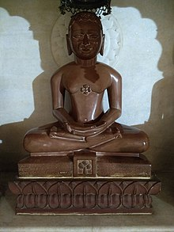 Shitalanatha was the tenth tirthankara of the present age according to Jainism. According to Jain beliefs, he became a siddha, a liberated soul which has destroyed all of its karma. Jains believe Shitalanatha was born to King Dradhrath and Queen Nanda at Bhaddilpur into the Ikshvaku dynasty. His birth date was the twelfth day of the Magha Krishna month of the Indian national calendar. Shitalanatha is associated with Svastika (Dig.)/ Srivatasa (Svet.) emblem, Pilurikha tree, Brahma Yaksha and Manavi (Dig.) & Ashoka (Svet.) Yakshi.
-
Shreyansanath
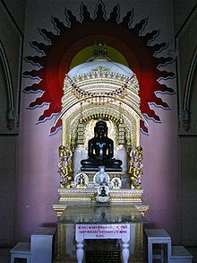 Shreyansanath was the eleventh Jain Tirthankara of the present age (Avasarpini).[2] According to Jain beliefs, he became a Siddha - a liberated soul which has destroyed all of its karma. Shreyansanatha was born to King Vishnu and Queen Vishnu Devi at Simhapuri, near Sarnath in the Ikshvaku dynasty. His birth date was the twelfth day of the Falgun Krishna month of the Indian calendar.[2]
-
Vasupujya
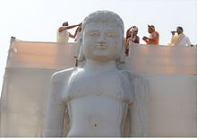 Vasupujya Swami was the twelfth tirthankara in Jainism of the avasarpini (present age). According to Jain beliefs, he became a siddha, a liberated soul which has destroyed all of its karma. Vasupujya was born to King Vasupujya and Queen Jaya Devi at Champapuri in the Ikshvaku dynasty. His birth date was the fourteenth day of the Falgun Krishna month of the Indian calendar. He never married and remained a celibate.[3] He attained Kevala Jnana within one month of Tapsya and Moksha at Champapuri, of Bihar in India on the fourteenth day of the bright half of the month of Ashadh.
-
Vimalanatha
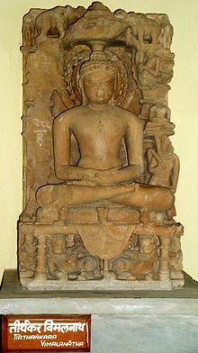 Vimalanatha was the thirteenth Jain Tirthankara of the present age (Avasarpini). According to Jain beliefs, he became a Siddha, a liberated soul which has destroyed all of its karma. Vimalanatha was born to King Kratavarma and Queen Shyamadevi at Kampilya of the Ikshvaku dynasty. His birth date was the third day of the Magh Sukla month of the Indian calendar.
-
Anantanatha
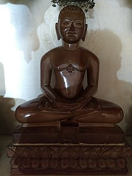 Anantanatha was the fourteenth Tirthankara of the present age (Avasarpini) of Jainism. According to Jain beliefs, he became a siddha, a liberated soul which has destroyed all of its karma. Anantanatha was the fourteenth Tirthankara of the present age (Avasarpini) of Jainism.[2] According to Jain beliefs, he became a siddha, a liberated soul which has destroyed all of its karma.[3] Anantanatha was born to King Sinhasena and Queen Suyasha at Ayodhya in the Ikshvaku dynasty.[2] His birth date was the 13th day of the Vaishakha Krishna month of the Indian calendar.[citation needed]
-
Dharmanatha
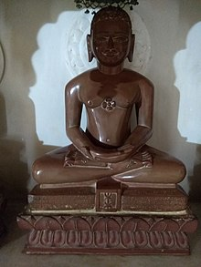 Dharmanatha was the fifteenth Jain Tirthankara of the present age (Avasarpini). According to Jain beliefs, he became a siddha, a liberated soul which has destroyed all of its karma. Dharmanath was born to King Bhanu Raja and Queen Suvrata Rani at Ratnapuri in the Ikshvaku dynasty. His birth date was the third day of the Magh Sukla month of the Indian calendar.[2] Hutheesing Jain Temple, located at Ahmedabad in Gujarat, constructed in 1848 AD, is dedicated to him.
-
Shantinatha
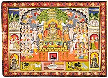 Shree Shantinatha was the sixteenth Jain tirthankar of the present age (Avasarpini).[2] Shree Shantinatha was born to King Visvasen and Queen Achira at Hastinapur in the Ikshvaku dynasty. His birth date is the thirteenth day of the Jyest Krishna month of the Indian calendar. He was also a Chakravartin and a Kamadeva. He ascended to throne when he was 25 years old.[3] After over 25,000 years at the throne, he became a Jain monk and started his penance. According to Jain beliefs, he became a siddha, a liberated soul which has destroyed all of its karma.
-
Kunthunath
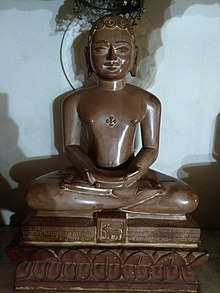 Kunthunath was the seventeenth Tirthankara, seventh Chakravartin[3] and twelfth Kamadeva of the present half time cycle, Avasarpini.[1][4] According to Jain beliefs, he became a siddha, liberated soul which has destroyed all of its karma. Kunthunatha was born to King Sura (Surya)[1] and Queen Sridevi at Hastinapur[3] in the Ikshvaku dynasty on the fourteenth day of the Vaishakh Krishna month of the Indian calendar.[4]
-
Aranatha
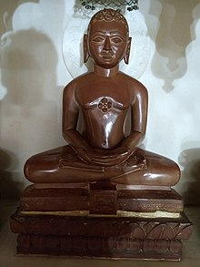 Aranath was the eighteenth Jain Tirthankar of the present half cycle of time (Avasarpini).[2] He was also the eighth Chakravartin[3] and thirteenth Kamadeva. According to Jain beliefs, he was born around 16,585,000 BCE. He became a siddha i.e. a liberated soul which has destroyed all of its karmas. Aranath was born to King Sudarshan and Queen Devi (Mitra) at Hastinapur in the Ikshvaku dynasty.[2] His birth date was the tenth day of the Migsar Krishna month of the Indian calendar. There were 50,000 monks with arnath.
-
Māllīnātha
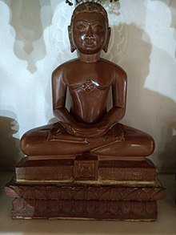 Māllīnātha (Prakrit Mālliṇātha, "Lord of jasmine or seat") was the 19th tīrthaṅkara "ford-maker" of the present avasarpiṇī age in Jainism. Jain texts indicate Mālliṇātha was born at Mithila into the Ikshvaku dynasty to King Kumbha and Queen Prajâvatî. Tīrthaṅkara Māllīnātha lived for over 56,000 years, out of which 54,800 years less six days, was with omniscience (Kevala Jnana).[2] Lord Mallinatha is believed to be a woman named Malli bai by Swetambar Jains while the Digambara sect believes all 24 tirthankara to be men including Māllīnātha. Digambara tradition believes a woman can reach to the 16th heaven and can attain liberation only being reborn as a man. Digambara tradition says Mallinatha was a son born in a royal family, and worships Mallinatha as a male.[3][4] However, the Svetambara tradition of Jainism states that Māllīnātha was female with a name Malli bai.[5] According to Jain beliefs, Mālliṇātha became a siddha, a liberated soul which has destroyed all of its karma.[6]
-
Munisuvrata
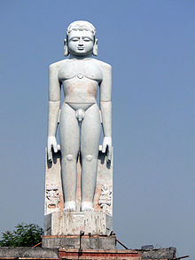 Munisuvrata Swami (Munisuvratanātha) was the twentieth Tirthankara of the present half time cycle (avasarpini) in Jain cosmology. He became a siddha, a liberated soul which has destroyed all of his karma. Events of the Jaina version of Ramayana are placed at the time of Munisuvratanatha. His chief apostle (gaṇadhara) was sage Malli Svāmi. Munisuvrata was the twentieth tirthankara of the present half time cycle (avasarpini) in Jain cosmology.[2] Jain texts like padmapurana place him as a contemporary of Rama.[3][4] According to Jain texts, Munisuvrata was born as 54 lakh years passed after the birth of the nineteenth tirthankara, Mallinātha.[5] According to Jain beliefs, Munisuvrata descended from the heaven called Ānata kalpa on the twelfth day of the bright half of the month of Āśvina – āśvina śukla dvādaśi– to queen Padmā and king Sumitra.[6][7] On the third day of Shraavana (month) Krishna (dark fortnight) according to Hindu calendar, queen Padmavati of Rajgir saw sixteen auspicious dreams. When she shared her dreams with her husband, king Sumitra of the Harivamsa clan, he explained that a tirthankara will be born to them soon. Then, Munisuvrata was born to them on the fifteenth day of the Shraavana Shukla (bright fortnight) in 1,184,980 BC.[2][8] His height is mentioned to be 20 bows (60 metres) and complexion as a dark one.[6][9]
-
Naminatha

Naminatha was the twenty-first tirthankara of the present half time cycle, Avsarpini. He was born to the King Vijaya and Queen Vipra of the Ikshvaku dynasty. King Vijaya was the ruler of Mithila at that time.[3] When Naminatha was in his mother's womb, Mithila was attacked by a group of powerful kings. The aura of Naminatha forced all the kings to surrender to King Vijaya.[4] Naminatha was born on the 8th day of Shravan Krishna of the lunisolar Jain calendar. He attained Kevala Jnana under a Bakula tree. He had 17 Ganadhara, Suprabha being the leader.[5] According to Jain tradition, he liberated his soul by destroying all of his karma and attained Moksha from Sammed Shikhar nearly 571,750 years before Neminatha.[6] He was preceded by Munisuvrata who is believed to have lived 570,000 years before him.[6]
-
Neminatha
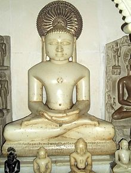 Neminatha, also known as Nemi and Aristanemi, is the twenty-second tirthankara (ford-maker) in Jainism. Along with Mahavira, Parshvanatha and Rishabhanatha, Neminatha is one of the twenty four tirthankaras who attract the most devotional worship among the Jains. According to Jain beliefs, Neminatha lived 2356 years before the 23rd tirthankara Parshvanatha. He is mentioned as the youngest son of king Samudravijaya and queen Shivadevi in Jainism. The Hindu god Krishna is mentioned as his cousin. He is believed to have been born at Sauripura in the Yadu lineage, like Krishna. His birth date is mentioned as the fifth day of Shravana Shukla of the Hindu calendar. He is believed to have herded cattle and to have become fond of animals. According to Jain belief, on his wedding day Neminatha heard the cries of animals being killed for the marriage feast, and moved by the sorrow he renounced the world to become a monk – a scene found in many Jain artwork. He is believed to have attained moksha on Girnar Hills near Junagadh, a pilgrimage center for Jains.
-
Parshvanatha
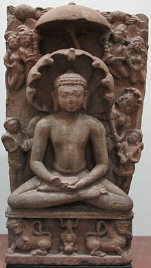 Parshvanatha (Pārśvanātha), also known as Parshva (Pārśva) and Paras, was the 23rd of 24 tirthankaras (ford-makers or propagators of dharma) of Jainism. He is one of the earliest tirthankaras who are acknowledged as historical figures. He was the earliest exponent of Karma philosophy in recorded history. The Jain sources place him between the 9th and 8th centuries BC whereas historians point out that he lived in the 8th or 7th century BC.[4] Parshvanatha was born 273 years before Mahavira. He was the spiritual successor of 22nd tirthankara Neminath. He is popularly seen as a propagator and reviver of Jainism. Parshvanatha attained moksha on Mount Sammeta (Madhuban, Jharkhand) in the Ganges basin, an important Jain pilgrimage site. His iconography is notable for the serpent hood over his head, and his worship often includes Dharanendra and Padmavati (Jainism's serpent god and goddess). According to Jain texts, Parshvanatha was born in Banaras (Varanasi), India. Renouncing worldly life, he founded an ascetic community. Texts of the two major Jain sects (Digambaras and Śvētāmbaras) differ on the teachings of Parshvanatha and Mahavira, and this is a foundation of the dispute between the two sects. The Digambaras believe that there was no difference between the teachings of Parshvanatha and Mahavira. According to the Śvētāmbaras, Mahavira expanded Parshvanatha's first four restraints with his ideas on ahimsa (non-violence) and added the fifth monastic vow (celibacy). Parshvanatha did not require celibacy, and allowed monks to wear simple outer garments. Śvētāmbara texts, such as section 2.15 of the Acharanga Sutra, say that Mahavira's parents were followers of Parshvanatha (linking Mahavira to a preexisting theology as a reformer of Jain mendicant tradition).
-
Mahavira

Mahavira (Sanskrit: महावीर:), also known as Vardhamana was the 24th Tirthankara of Jainism. He was the spiritual successor of 23rd Tirthankara Parshvanatha.[9] Mahavira was born in the early part of the 6th century BC into a Royal Ikshvaku Jain family in Bihar, India. His mother's name was Trishala and father's name was Siddhartha. They were lay devotees of Parshvanatha. Mahavira abandoned all worldly possessions at the age of about 30 and left home in pursuit of spiritual awakening, becoming an ascetic. Mahavira practiced intense meditation and severe austerities for 12 and half years, after which he attained Kevala Gyan (omniscience). He preached for 30 years and attained Moksha (salvation) in the 6th century BC, although the year varies by sect. Historically, Mahavira, who preached Jainism in ancient India, was an older contemporary of Gautama Buddha. Scholars variously date him from 6th-5th century BC and his place of birth is also a point of dispute among them. Mahavira taught that observance of the vows of ahimsa (non-violence), satya (truth), asteya (non-stealing), brahmacharya (chastity), and aparigraha (non-attachment) are necessary for spiritual liberation. He taught the principles of Anekantavada (many-sided reality): syadvada and nayavada. Mahavira's teachings were compiled by Indrabhuti Gautama (his chief disciple) as the Jain Agamas. The texts, transmitted orally by Jain monks, are believed to have been largely lost by about the 1st century CE (when the remaining were first written down in the Svetambara tradition). The surviving versions of the Agamas taught by Mahavira are some of Svetambara Jainism's foundation texts, but their authenticity is disputed in Digambara Jainism. Mahavira is usually depicted in a sitting or standing meditative posture, with the symbol of a lion beneath him. His earliest iconography is from archaeological sites in the North Indian city of Mathura, and is dated from the 1st century BCE to the 2nd century AD. His birth is celebrated as Mahavir Janma Kalyanak and his nirvana (salvation) is observed by Jains as Diwali.
भक्तामर स्तोत्र के नियमित पढ़ने से कैंसर से मुक्ति मिल सकती है, खासतौर पर पद 45 के पढ़ने से। भक्तामर स्तोत्र में 48 श्लोक हैं। हर श्लोक में मंत्र शक्ति निहित है। इसके 48 के 48 श्लोकों में ‘म’, ‘न’, ‘त’ व ‘र’ ये 4 अक्षर पाए जाते हैं। भक्तामर स्तोत्र का प्रतिदिन आराधन कर धर्मध्यान कर जीवन में सुख-शांति का अनुभव करें।
भक्तामर स्तोत्र पढ़ने की विधि
भक्तामर स्तोत्र के पढ़ने का कोई एक निश्चित नियम नहीं है। भक्तामर स्तोत्र को किसी भी समय प्रात:, दोपहर, सायंकाल या रात में कभी भी पढ़ा जा सकता है। इसकी कोई समयसीमा निश्चित नहीं है, क्योंकि ये सिर्फ भक्ति प्रधान स्तोत्र हैं जिसमें भगवान की स्तुति है। धुन तथा समय का प्रभाव अलग-अलग होता है।
भक्तामर स्तोत्र का प्रसिद्ध तथा सर्वसिद्धिदायक महामंत्र है- ‘ॐ ह्रीं क्लीं श्रीं अर्हं श्री वृषभनाथतीर्थंकराय् नम:।’